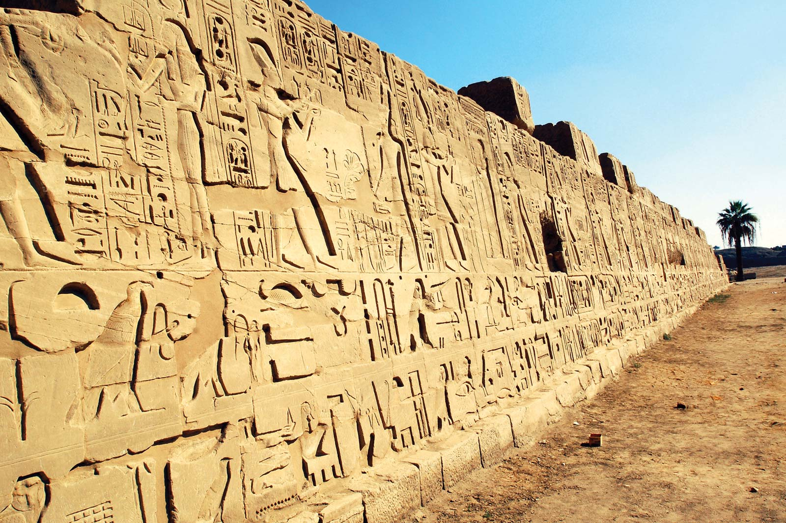

The Culture and Way of Life
Egypt is cosmopolitan in the sense that it is a perfect synthesis of numerous civilizations. Egypt's culture and tradition are akin to a melting pot, where several cultures and traditions have combined to create a beautiful picture and a mentality that embraces new and progressive ideas in order to foster a liberal environment. Egyptians' pleasant demeanor toward foreigners and visitors reflects this open outlook. Egyptians will always share their service and excitement with those they hardly know if requested. Aside from the magnificent attractions and cultural ambiance in Egypt, the Egyptians' pleasant faces add to the allure. All of these charming snippets are the highlight of your trip to Egypt, and they will stay with you as a memory for the rest of your life. Egyptians are, on the whole, adaptable individuals who enjoy assisting others. They will gladly answer any inquiry you may have. One of the most fascinating aspects of Egyptian culture is that if you ask an Egyptian a question, he will gather a group of people to discuss the issue and will do his best to provide you with the correct answer.
Family
In Egypt, family integrity is extremely important, and the family's head of household assumes full responsibility for running the household in a proper manner and with a strong focus on behavior. Family values and relationships are held in high regard. Perhaps this is one of the reasons why, especially for women traveling alone, traveling in Egypt's cities is safer than traveling in any other top global destination.
Hieroglyphics
- 


Hieroglyphic writing is a writing system that uses characters that look like pictures. Individual symbols, known as hieroglyphs, might be understood as pictures, symbols for objects, or symbols for sounds. The term hieroglyphic (from the Greek word for "holy engraving") first appears in Diodorus Siculus' works (1st century BCE). Other Greeks had already used the term "holy signs" to describe Egyptian writing. Among the Egyptian scripts, the Greeks designated as hieroglyphic the script found on temple walls and public monuments, in which the characters were carved stone drawings. This script was separated from two other forms of Egyptian writing that were written with ink on papyrus or other smooth surfaces, according to the Greeks. These were known as the hieratic, which was still used for sacred literature during the period of the ancient Greeks, and the demotic, which was a cursive script used for everyday documents.
Egyptian Fashion
Attire worn in ancient Egypt from the end of the Neolithic period (before to 3100 BC) until the collapse of the Ptolemaic Kingdom with Cleopatra's death in 30 BC is known as ancient Egyptian clothing. Egyptian clothes came in a rainbow of colors. The ancient Egyptian clothes, which were adorned with costly gems and jewels, were designed for not only beauty but also comfort. Egyptian dress was developed to keep people cool in the scorching heat of the desert.
-

Pharaonic Fashion
Since prehistoric times, Egypt's environment has necessitated people to wear light very light clothes fashioned from flax yarn, which was the most readily accessible, while later eras utilized wool and cotton. Farmers' flax was spun into exquisite linen for apparel. Loincloths or short kilts were worn by working-class men, as were long shirt-like garments tied at the waist with a sash. Kilts were created by folding a rectangular piece of linen around the torso and tying it at the waist. Wealthy men wore knee-length shirts, loincloths, or kilts, and a string of beads, armlets, and bracelets graced their wrists. Full-length wraparound gowns and close-fitting sheaths were worn by working-class ladies.
-
Bedouin Fashion
Bedouins use the wool from their camels, sheep, and goats to produce their own clothing. The clothing is both useful and fashionable in design. The kufiyya, or headcloth, is the most distinguishing feature of an Arab's attire. Heavy woollen coils or a 'agal' keep it in place. Wrap the ends of the cloth around your face and neck. It serves as a barrier against the cold, a shield from the sun's heat, and a wind and sand screen. The wearer's ability to uphold manhood's commitments and responsibilities is demonstrated by the rope.
-

Nubian Fashion
It is a unique costume that reflects the nature of the Nubian people and their communities in the deep south, on the banks of the Nile, with palm palms on each side; its lexicon and shapes reflect many of the characteristics of Pharaonic culture; it is a unique costume that reflects the nature of the Nubian people and their communities in the deep south, on the banks of the Nile, with palm palms on each side. With the exception of weddings, Nubian males wear the same attire on most occasions. The diversity of ladies is characterized by their age and social status; we find women wearing light-colored robes before marriage and expensive feathers and vibrant colors after marriage, which are not authorized before marriage.
Religion
-
Places of Worship
For Egyptians, houses of worship are holy, and travelers from other countries should respect their serious attitude toward mosques and churches. Before accessing the sacred land, people are required to remove their shoes. Women are required to wear head coverings. When attending a mosque, it is always a good idea to dress modestly and cover yourself. Friday is regarded as the most frightening day of the week.
-
Holy Month
For Egyptians, Ramadan is a sacred month during which they greet one another and celebrate the month with friends and family. Egyptians stay awake at night during this month, praying and participating in spiritual activities. They also give to charity, rebuild their relationships, and share amity and affection with one another.
-
Islamic Egypt
During the early dynastic periods, such as the Fatimid and Ayyubid dynasties, Islam flourished in Egypt, establishing Egypt as a prominent cultural, political, and social power in the Islamic world. In 1250 AD, the Mamluks, a military caste, conquered Egypt and established it as a prominent Islamic state. After Muhammad Ali became Egypt's hereditary monarch in 1798, a French expedition commanded by Napoleon transformed the political scene. During his rule, Islamic Egypt began to modernize. Al-Mu'izz al-Din Street, El Azhar Street, Darb al-Ahmar Street, El Saliba Street, and Salah ad-Din Square in Cairo are just a few examples of Islamic art and architecture.
-
Coptic Egypt
Copts, who make up the bulk of Egyptian Christians, are members of the Coptic Orthodox Church and are thought to be descendants of Ancient Egyptians and among the first Christians. In fact, the word "Copt" comes from the Arabic word "Qibt" - or "Gibt" - which comes from the Greek word "Egyptos," which means "Egypt." The history of the Coptic Church is intertwined with the history of Christian monasticism, providing an excellent opportunity to visit Coptic monasteries that mark the Biblical Holy Family Journey trail. veniam.